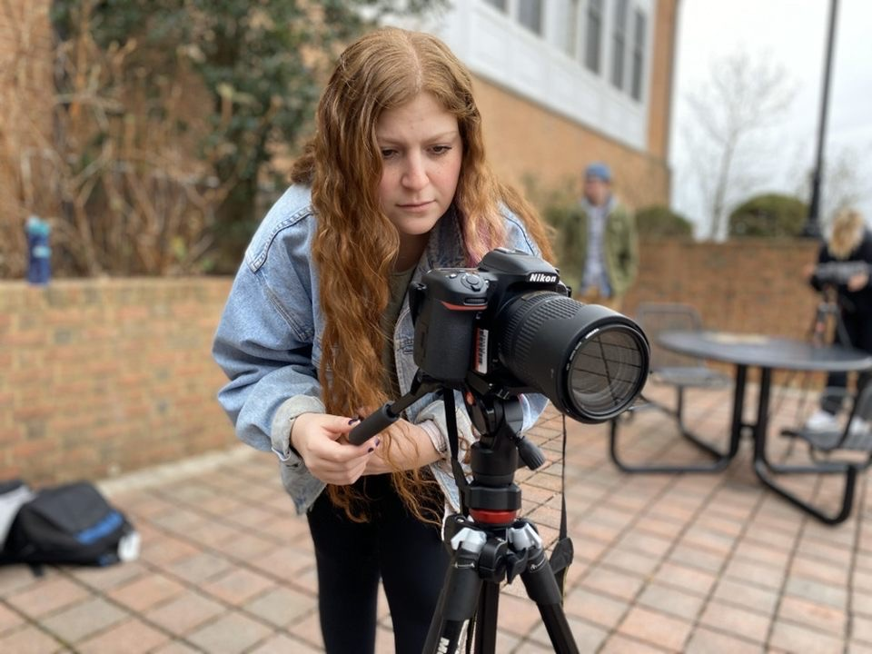

Sage Levy is a journalism and graphic design student at the University of Maryland, College Park and a D.C. based visual journalist. She most enjoys documenting (with photo and video) news events, landscapes, activism events and portraits. She is also skilled in graphic design and animation. Outside of visual journalism she enjoys traveling, caving, hiking and playing with her dog Augie. She is also the president of the UMD chapter of the NPPA and vice president of the Terrapin Trail Club, UMD's outdoor club.
